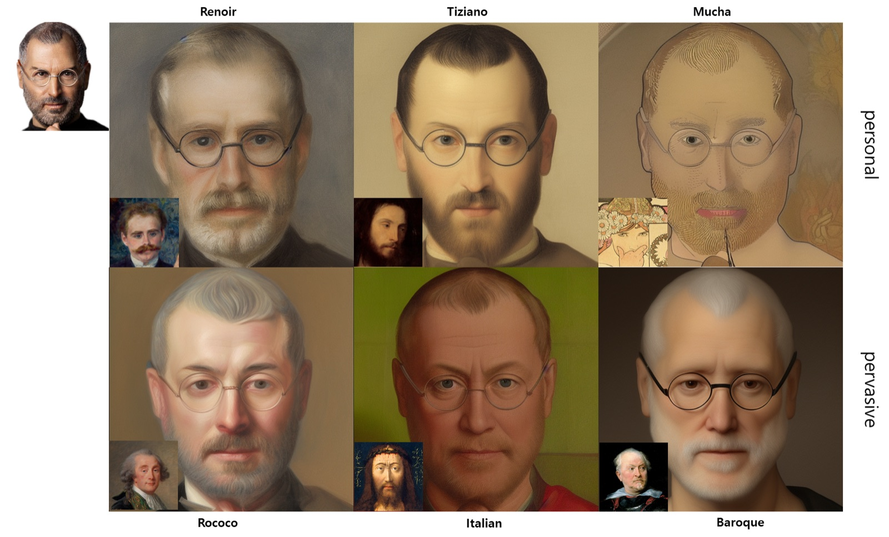
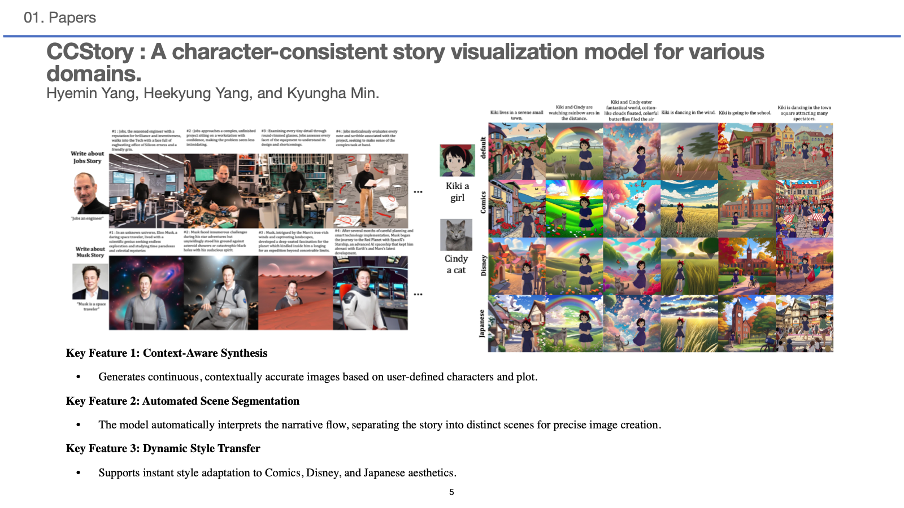
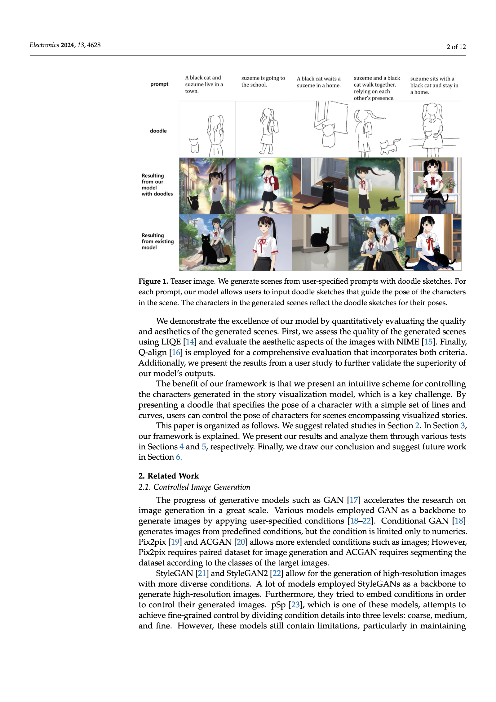

2024.12–2025.01 · TA
LangChain 기반 RAG 실습
수업 자료를 만들고, OpenAI API·HuggingFace·LangChain으로 검색 기반 챗봇을 만드는 실습 수업을 진행했습니다.
생성 모델의 입력과 제어 방법을 설계하고, 결과를 실험으로 확인했습니다.
01 / 게재 논문 · Electronics 2024
인물의 얼굴을 유지하면서 르누아르·무하 같은 작가와 바로크·로코코 같은 미술 사조의 스타일을 적용했습니다.

작품 수가 적은 작가의 스타일도 학습하면서 원본 인물의 특징을 보존해야 했습니다.
Stable Diffusion을 기반으로 스타일 정보를 반영하고, Canny edge와 ControlNet으로 형태 정보를 제어했습니다. 작가 스타일과 미술 사조를 모두 다룰 수 있도록 실험을 설계했습니다.
제1저자로 아이디어·모델 설계·실험에 참여했습니다. FID·ArtFID·LIQE와 사용자 평가로 결과를 비교하고 Electronics 13권 3호에 발표했습니다.
논문 원문 보기 ↗02 / 제출 원고 · 공개 코드
사용자가 지정한 캐릭터와 이야기를 추가 학습 없이 여러 장면으로 시각화하는 모델입니다.

장면마다 배경과 행동이 달라져도 사용자가 지정한 인물의 특징은 유지해야 했습니다. 이를 위해 새 캐릭터마다 모델을 추가 학습하는 방식은 피하고자 했습니다.
GPT로 이야기를 장면별 프롬프트·배경·레이아웃으로 나누었습니다. 이미지 처리 단계에서는 기본 캐릭터의 depth map을 얻고 IP-Adapter로 사용자가 지정한 캐릭터 특징을 반영한 뒤, 배경에 배치해 inpainting으로 완성했습니다.
제1저자로 아이디어·모델 설계·실험에 참여했습니다. 연구 결과를 제출 원고로 정리했으며, 추론 코드를 공개했습니다.
공개 코드 보기 ↗03 / 게재 논문 · Electronics 2024
텍스트만으로 표현하기 어려운 캐릭터의 자세와 장면 구도를 간단한 두들 스케치로 지정합니다.

프롬프트만으로는 여러 인물의 위치와 동세, 장면 전체의 구도를 원하는 대로 지정하기 어려웠습니다.
SDXL 기반 모델에 LoRA로 주요 캐릭터를 학습하고, T2I-Adapter로 두들 스케치를 조건으로 입력했습니다. 스케치의 단순한 선과 곡선이 캐릭터 자세와 배치에 반영되도록 했습니다.
제1저자로 아이디어·모델 설계·실험에 참여했습니다. 정량 평가와 생성 이미지 비교를 거쳐 Electronics 13권 23호에 발표했습니다.
논문 원문 보기 ↗04 / 게재 논문 · 컴퓨터게임및콘텐츠논문지 2023
인물 사진의 얼굴 방향과 형태, 안경 같은 세부 특징을 반영해 예술적 캐릭터를 생성하는 연구입니다.
인물 사진에서 예술적 캐릭터를 만들 때 얼굴의 각도와 형태, 안경 같은 특징을 함께 반영해야 했습니다.
이미지 인코더와 CLIP 인코더로 사진과 스타일 정보를 처리하고, 확산 과정·UNet·노이즈 제거를 거쳐 캐릭터를 생성하는 구조를 제안했습니다.
제1저자로 참여한 연구가 Journal of Computer Games and Contents 36권 3호에 영문 제목으로 게재됐습니다.
KCI 논문 정보 보기 ↗Teaching & practice
2024.12–2025.01 · TA
수업 자료를 만들고, OpenAI API·HuggingFace·LangChain으로 검색 기반 챗봇을 만드는 실습 수업을 진행했습니다.
2024.05–07 · TA
학생들이 스켈레톤 데이터 제작부터 영상 생성까지 경험하도록 FollowYourPose 모델을 포팅하고 Gradio 화면과 서버를 연결했습니다.
초상화 생성 연구의 출발점이 된 학부 AI 미술전도 함께 볼 수 있습니다.